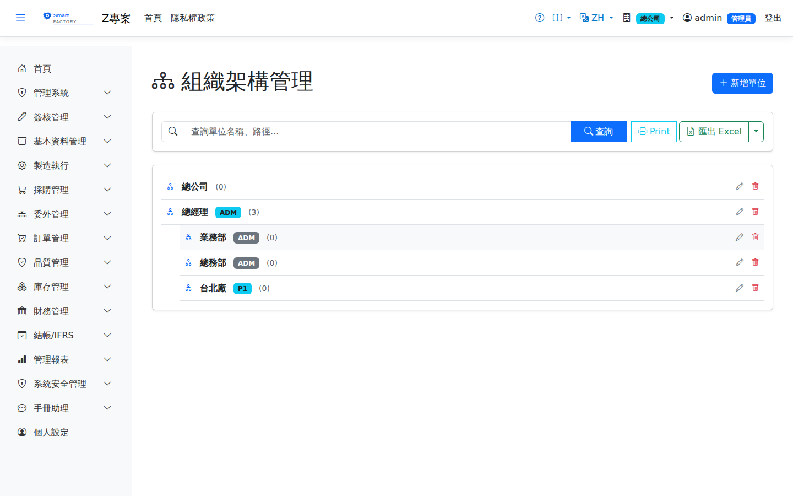

組織架構Organization Structure
選單位置：管理系統 → 組織架構 | 權限：目前身份為 AdminMenu: System Administration → Organization Structure | Permission: current role is Admin
組織架構維護公司的Organization structure maintains the company's 部門樹department tree。它有兩個實際作用：一是角色掛在組織單位上，二是. It does two things in practice: roles are attached to organization units, and 主管簽核沿著這棵樹往上找人supervisor approval walks up this tree to find the person above。因此組織架構畫得對不對，直接決定簽核流程跑不跑得動。. Whether the tree is drawn correctly therefore decides directly whether approval flows can run at all.

組織架構畫面截圖（示意，實際欄位/資料依權限與查詢條件而異）Organization structure screenshot (illustrative; actual fields and data vary by permission and query criteria)
欄位說明Field reference
| 欄位名稱Field | 必填Required | 說明Guide |
|---|---|---|
| 組織名稱Organization name | 必填Required | 部門名稱，例如「生產部」「採購課」。The department name, for example "Production" or "Purchasing". |
| 上層組織Parent organization | 留空即為Left empty it becomes a 最上層節點top-level node（通常是公司或廠）。編輯時，下拉清單會自動排除自己與自己的所有下層，避免把樹接成迴圈。 (usually the company or the plant). While editing, the drop-down automatically leaves out the unit itself and everything beneath it, so the tree cannot be looped back on itself. | |
| 廠別Plant | 這個單位隸屬的廠。The plant this unit belongs to. 可以留空It may be left empty——留空時沿用上層組織的廠別，一路往上找到第一個有填的為止。清單上顯示的是這個往上繼承後的結果。: left empty, the plant of the parent unit applies, walking up until one is found that has a value. The list shows the result after that inheritance. | |
| 排序Sort order | 同一層之中的顯示順序，數字小的在前；相同時再依名稱排列。The display order within one level: smaller numbers come first, and units with the same number are ordered by name. | |
| 目前路徑Current path | 唯讀，由系統自動組成：上層路徑 + 「/」 + 本單位名稱。改了名稱或搬了上層，存檔時路徑會跟著重算。Read-only and composed by the system: the parent's path, a slash, then this unit's name. Rename it or move it, and the path is recalculated on save. |
兩種顯示模式Two display modes
| 情況Situation | 畫面呈現What the screen shows |
|---|---|
| 查詢條件留空The search box is empty | 樹狀模式Tree mode：從最上層節點逐層展開整棵樹，並顯示每個單位繼承後的廠別。: the whole tree is drawn from the top-level nodes down, showing each unit's plant after inheritance. |
| 有輸入關鍵字A keyword is entered | 搜尋模式Search mode：改以平面清單列出名稱或路徑符合關鍵字的單位，此時不顯示樹狀層次。: the units whose name or path matches are listed flat, without the tree levels. |
樹上的標記怎麼讀How to read the markers on the tree
| 標記Marker | 意義What it means |
|---|---|
| 單位名稱旁的淺藍色廠別徽章A light blue plant badge beside the name | 這個單位自己指定了廠別。The unit has a plant of its own. |
| 單位名稱旁的灰色廠別徽章A grey plant badge beside the name | 這個廠別是從上層繼承來的，本身沒有指定（滑鼠停留會顯示提示）。The plant is inherited from the parent; the unit itself has none (hovering shows a hint). |
| 沒有廠別徽章No plant badge | 這個單位與它的所有上層都沒有指定廠別。Neither the unit nor any unit above it has a plant. |
| 名稱後方括號中的數字The number in brackets after the name | 直屬子單位的個數（只算下一層，不含更深層）。How many direct child units it has — the next level only, not deeper ones. |
用路徑關鍵字搜尋很好用：輸入上層部門的名稱，就會一次列出該部門底下所有層級的單位（因為它們的路徑都含有那段名稱）。Searching by path is useful: type the name of a higher department and every unit beneath it is listed at once, at any depth, because they all carry that name in their path.
操作步驟Steps
建立部門Creating a department
1
點選左側選單「管理系統 > 組織架構」，按「查詢」載入整棵樹。Choose "System Administration > Organization Structure" in the left-hand menu and click "Search" to load the whole tree.
2
點「新增」，填組織名稱，選上層組織（建最上層則留空）。Click "Add", enter the name and choose the parent (leave it empty for a top-level unit).
3
需要固定在特定廠時才選廠別；同一廠底下的子部門通常留空由上層繼承即可。Choose a plant only when the unit is fixed to one; child departments within the same plant are usually left empty to inherit it.
4
填排序後按「儲存」，路徑由系統自動產生。Enter the sort order and click "Save"; the path is generated automatically.
搬移部門Moving a department
1
編輯該單位，把「上層組織」改成新的上層後儲存。Open the unit, change "Parent organization" to the new parent and save.
2
本單位的路徑會立即重算。This unit's path is recalculated at once. 但底下子單位的路徑不會自動跟著更新The paths of the units beneath it, however, are not updated automatically——搬移有子單位的部門後，請逐一開啟子單位存一次檔，讓它們的路徑重新產生。: after moving a department that has children, open each child and save it once so that its path is regenerated.
搬移會改變主管簽核的對象：Moving a unit changes who signs as supervisor:主管取的是 the supervisor is taken from the 上層組織單位底下的人people under the parent unit，換了上層就等於換了簽核人。已經送出、還在跑的簽核單不受影響（簽核人在送審當下就已決定），但之後送出的單會走新的路線。, so a new parent means a new approver. Requests already submitted and still running are unaffected — their approver was decided at the moment of submission — but everything submitted afterwards follows the new route.
刪除組織單位Deleting an organization unit
| 擋下的原因Reason it is blocked | 處理方式What to do |
|---|---|
| 底下還有子組織單位It still has child units | 先把子單位搬到別的上層或一併刪除，由最底層往上刪。Move the children to another parent or delete them too, working from the bottom up. |
| 有角色掛在這個單位Roles are attached to it | 到「角色管理」把那些角色改掛其他組織單位。Reattach those roles to another organization unit under "Role Management". |
匯出Export
可匯出 Excel（.xlsx）、CSV 或 JSON，內容為組織名稱、路徑與排序。匯出的是Excel (.xlsx), CSV or JSON can be exported, containing the name, path and sort order. The export covers 全部組織單位every organization unit，不受畫面上查詢條件影響。, regardless of what is in the search box on screen.